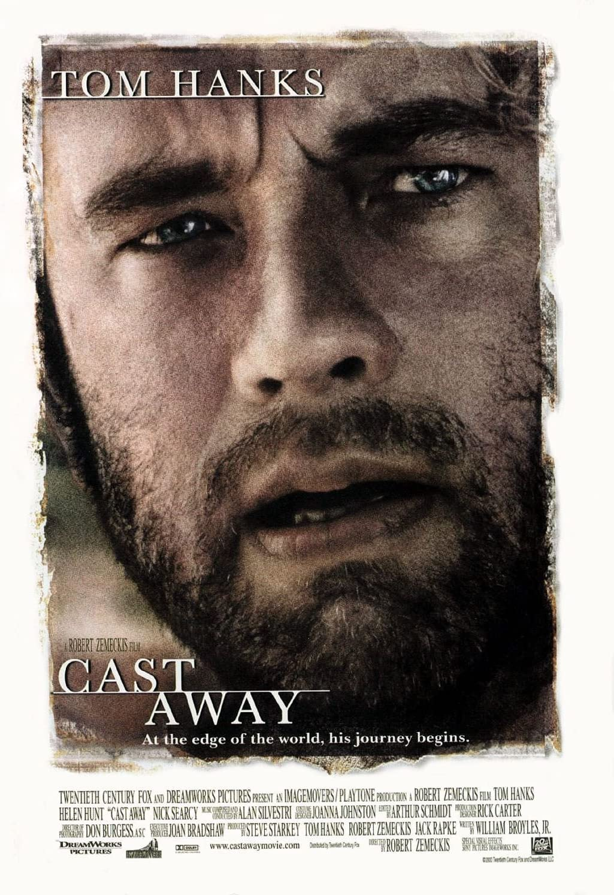
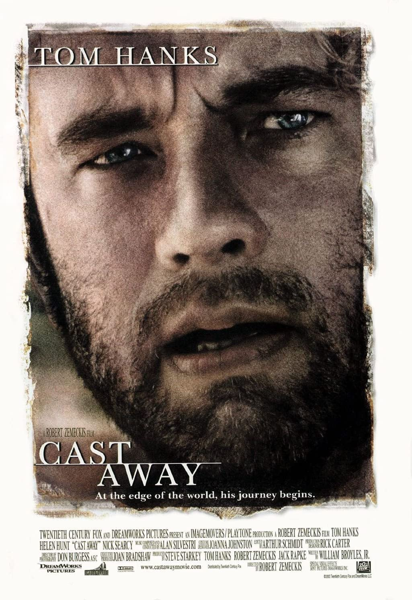
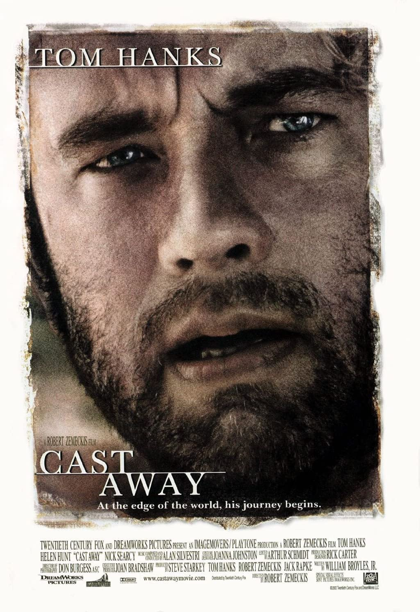

Actors: the artists of cinema industry
The cinema is considered as the 7th art,
to make that art, there are many people but all their effort and time in it. There are the script writers,
cinematography team, Visual effects editors, sounds and music specialist.But eventually the main core of the cinema
industry is the actor.
The actors and actresses are the people who exert the most effort in this process, sometimes a good acting performance
turns the movie to another level.
Here are some of the most famous talented actors:
Brad Pitt

William Bradley Pitt (born December 18, 1963)
he is an American actor and film producer. He is the recipient of various accolades, including two Academy Awards,
a British Academy Film Award, two Golden Globe Awards, and a Primetime Emmy Award.
As a public figure, Pitt has been cited
as one of the most powerful and influential people in the American entertainment industry.
Here is a list of his most famous works:

- Inglorious basterds
- Fight Club
- Once Upon A Time In Hollywood
- Seven
- Bullet Train
- World War Z
- Meet Joe Black
- Babylon
- Fury
One of Brad-Pitt's best scenes from the iconic movie Fight Club
Tom Hanks
.jpeg)
.jpeg)
.jpeg)
Thomas Jeffrey Hanks (born July 9, 1956)
is an American actor and filmmaker. Known for both his comedic and dramatic roles, he is one of the most popular
and recognizable film stars worldwide,
and is regarded as an American cultural icon.Hanks' films have grossed
more than $4.9 billion in North America and more than $9.96 billion worldwide,
making him the fourth-highest-grossing actor in North America.
Here is a list of his most famous works:
.jpeg) 

- Shawshank Redemption
- The Green Mile
- Cast Away
- Greyhound
- Forrest Gump
- Saving Private Ryan
- The Terminal
- Catch Me If You Can
- The Da Vinci Code

One of Tom's best scenes from Forrest Gump
Matthew McConaughey
Matthew David McConaughey (born November 4, 1969)
American actor and producer Matthew David McConaughey was born in Uvalde, Texas. His mother, Mary Kathleen (McCabe),
is a substitute school teacher originally from New Jersey. His father, James Donald McConaughey,
was a Mississippi-born gas station owner who ran an oil pipe supply business.
He is of Irish, Scottish, German, English, and Swedish descent. Matthew grew up in Longview, Texas,
where he graduated from the local High School (1988). Showing little interest in his father's oil business,
which his two brothers later joined, Matthew was longing for a change of scenery, and spent a year in Australia,
washing dishes and shoveling chicken manure. Back to the States, he attended the University of Texas in Austin,
originally wishing to be a lawyer. But, when he discovered an inspirational Og Mandino book "The Greatest Salesman
in the World" before one of his final exams, he suddenly knew he had to change his major from law to film.
Here is a list of his most famous works:
.jpeg)
.jpeg)
- Interstellar
- True Detective
- The Gentlemen
- The Wolf of Wall Street
- Dallas Buyers Club
- The Lincoln Lawyer
- Gold
- Mud
- The Dark Tower
One of his best scenes from Interstellar movie
Leonardo DiCaprio
.jpeg)
.jpeg)
.jpeg)
Leonardo Wilhelm DiCaprio (born November 11, 1974)
is an American actor and film producer. Known for his work as a leading man in biopics and period films,
he is the recipient of numerous accolades, including an Academy Award, a British Academy Film Award,
and three Golden Globe Awards. As of 2019, his films have grossed over $7.2 billion worldwide,
and he has been placed eight times in annual rankings of the world's highest-paid actors.
Here is a list of his most famous works:
.jpeg)
.jpeg)
.jpeg)
- The Wolf of Wall Street
- Don't Look Up
- Shutter Island
- Inception
- Titanic
- Catch Me If You Can
- Django Unchained
- The Revenant
- The Departed